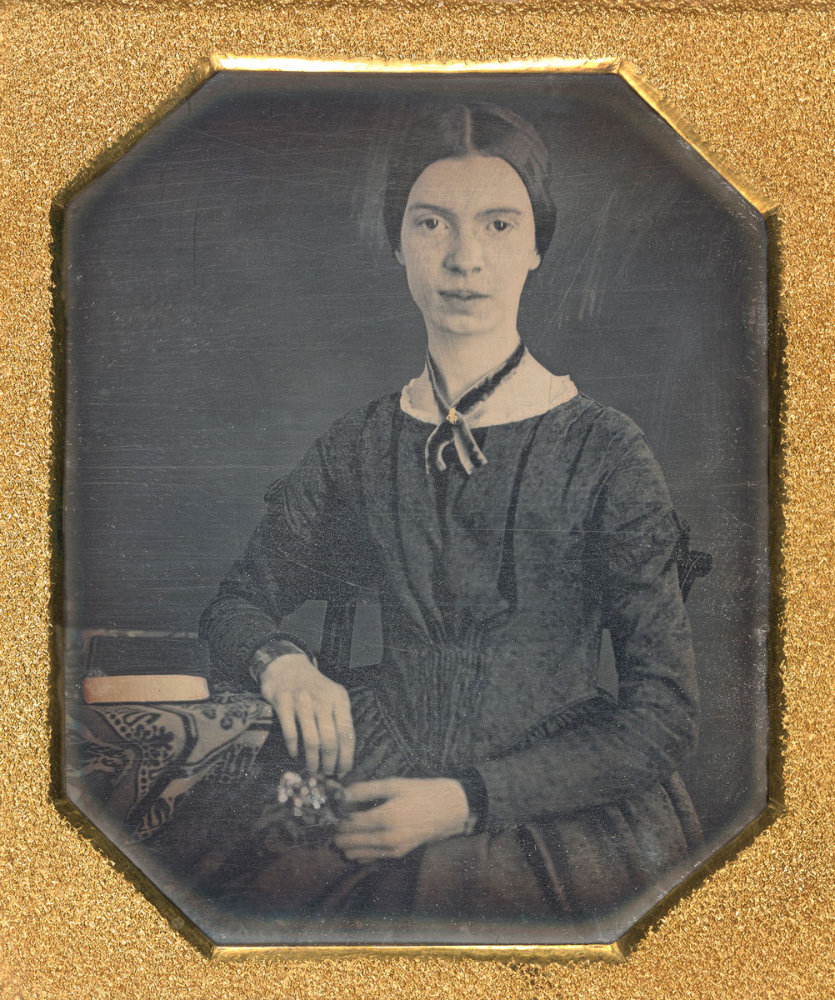

Tis So Much Joy
Tis so much joy! ‘Tis so much joy!
If I should fail, what poverty!
And yet, as poor as I,
Have ventured all upon a throw!
Have gained! Yes! Hesitated so—
This side the Victory!
Life is but Life! And Death, but Death!
Bliss is, but Bliss, and Breath but Breath!
And if indeed I fail,
At least, to know the worst, is sweet!
Defeat means nothing but Defeat,
No drearier, can befall!
And if I gain! Oh Gun at Sea!
Oh Bells, that in the Steeples be!
At first, repeat it slow!
For Heaven is a different thing,
Conjectured, and waked sudden in—
And might extinguish me!
– Emily Dickinson
